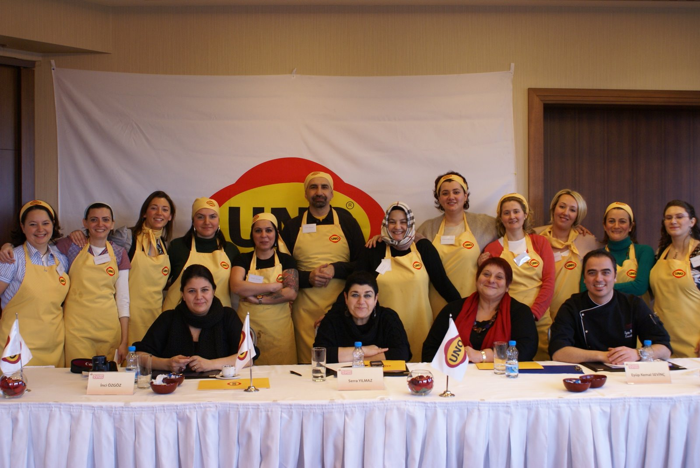

Blogger Sofrası · UNO · 2008Türkiye's first social media activation
In the dawn of social media, created and built a powerful digital community
130+ bloggers turned into brand ambassadors with nothing but product seeding — no paid incentives, no fees. Built UNO's digital footprint at the precise moment social media was entering Turkish life, on a model no one had attempted before.
Problem solved
No playbook for community-driven brand building in Türkiye. Designed one from scratch — and it ran on zero paid budget.